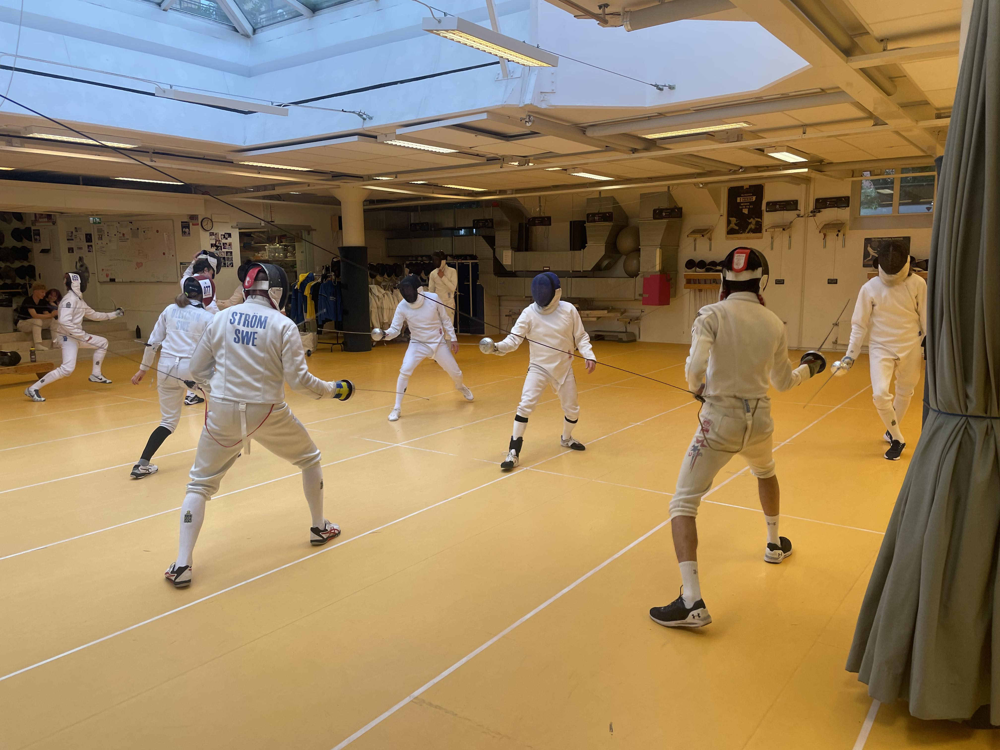
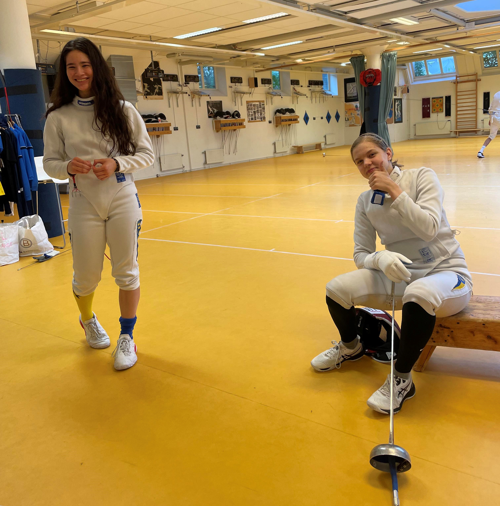
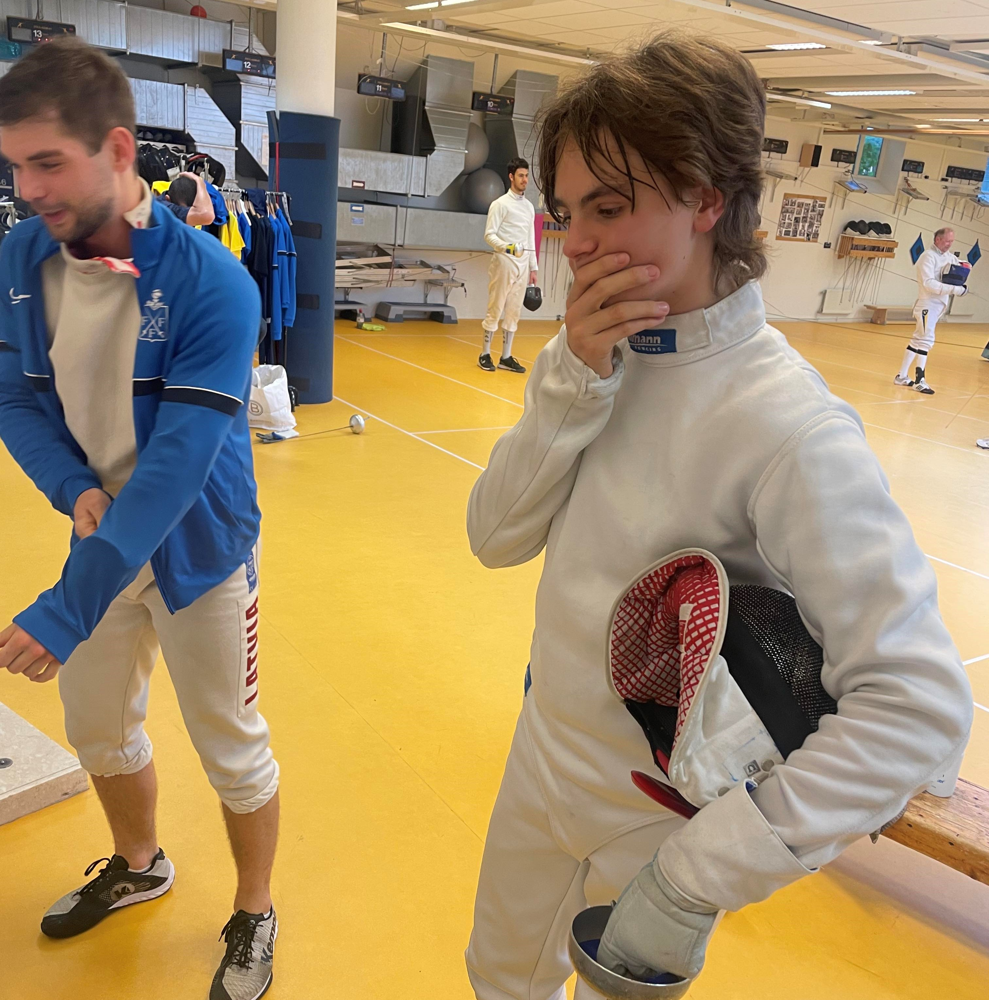
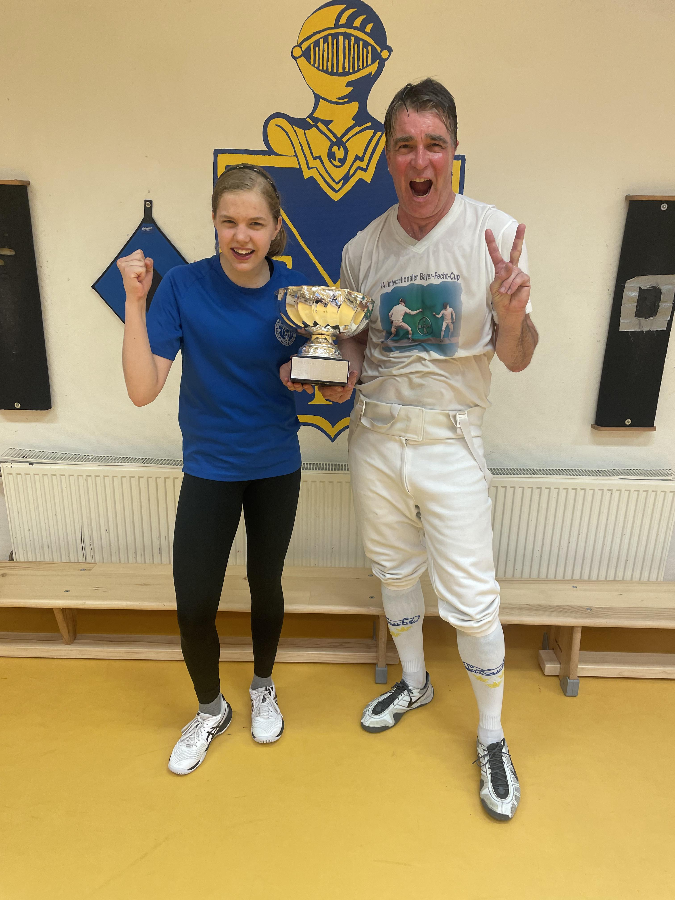
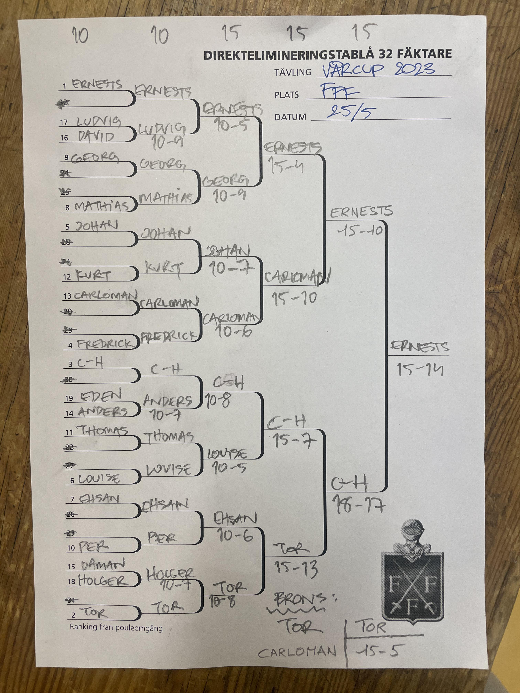

| Resultat från deltävling 5 | ||
| Vårcupen 2023 | ||
| Namn | Placering | Poäng |
|---|---|---|
| Ernest Cimborevics | 1 | 32 |
| C-H Wendt | 2 | 26 |
| Tor Forsse | 3 | 21 |
| Rusu Carloman | 4 | 19 |
| Johan Ström | 5 | 14 |
| Louise Ulltjärn | 6 | 14 |
| Leopold Germer | 7 | 14 |
| Georg Andersson | 8 | 14 |
| Frederick Marelius | 9 | 8 |
| Mathias Elmfeldt | 10 | 8 |
| Per Sandgren | 11 | 8 |
| Thomas Schiöler | 12 | 8 |
| Curt Benkestock | 13 | 8 |
| Anders Brunelius | 14 | 8 |
| Ludvig Dahlström | 15 | 8 |
| Holger Claesson | 16 | 8 |
| Daman Heer | 17 | 4 |
| David Ramsberg | 18 | 4 |
| Eden Renda | 19 | 4 |

Sommarens har nu tagit sin början vilket innebär att våren är till ända och Vårcupen med den. Men oj vilken resa det har varit! Årets vårcup har helt säkert överträffat allt vi tidigare varit med om och det är svårt att med ord göra denna resa rättvisa. Det är likväl vår uppgift att på vårt vanliga karga och tafatta vis försöka summera årets tävlingar.
Tillbakablick
Vi börjar med en kort promenad längs minnenas stig. Visst känns det som igår när vi såg Ian sträcka sin vänsternäve mot fäktsalens takvalv efter att han roffat åt sig segern i den första deltävlingen? Ändå skedde detta i januari! Vi kunde då också förstå att det var en tydlig indikator på att den unga generationen på allvar skulle utmana den äldre.
I februari kom de äldres obevekliga svar när Robert med eftertryck steg överst på prispallen efter att, utan större besvär tvingat CH på knä. CH hade dessförinnan hindrat både Ian och Ernest från avancemang. Därmed hade de gamla antagit ungdomarnas utmaning. Ian behöll dock alltjämt greppet om ledningen totalt.
Mars upplaga av tävlingen följde mönstret från första tävlingen och utmynnade återigen i en kamp mellan CH och Ian. Även denna gång var det CH som gick segrande ur striden. I den här fasen av tävlingen var det fortfarande Ian som bevakade sin ledning i totalsammanställningen före Robert och därefter CH.
I deltävling 4 var det dags för ett nygammalt namn att presentera sig när Tor bestämde sig för att kliva in i rampljuset. I finalmatchen var det Ernest som fick nöja sig med 2:a platsen, men det innebar också att både han och Tor klättrade i totallistan där nu CH hade avancerat till en 2:a plats efter Ian som fortfarande bevakade sin ledning.
Så hur skulle det bli i upploppet, skulle det bli tronskifte till de ungas favör eller skulle de gamla kunna hålla emot? Det var detta som den 5:e och sista deltävlingen skulle ge svar på.
Men innan vi går in på detta måste vi ta upp en historia som hittills inte har belysts på det sätt som den förtjänar - Louises otroliga framfart. Dit riktar vi nu våra blickar.
Louises segertåg
Få fäktare tränar lika hårt och vinner lika mycket som Louise. I skrivande stund toppar Louise sverigerankingen i såväl U17 som U20 och är dessutom 2:a i seniorrankingen. Louise är också den damfäktare som flest gånger, oförskräckt utmanat de adrenalinstinna herrarna i Värcpupen. Varje gång har hon gjort bra ifrån sig med bland annat två 6:e platser. Det är därför ingen överraskning att Louise toppar Vårcupslistan för damer.
Vi måste här även ge våra hyllningar till Eden och Linnea som är de andra två damfäktarna som har gett sig in i vårcupskampen!

Deltävling 5
Inför den 5:e deltävlingen var spelplanen öppen. Inte mindre än 7 fäktare hade teoretiska chanser att gå hem med segern. När väl anmälningslistan stängdes hade förutsättningarna dock skiftat till fördel för CH, Ernest, Tor och Lucas. Ians studentfirande stoppade hans möjligheter att bevaka sin ledning och Roberts frånvaro innebär en betydande scenförändring.
Pouleomgången
Ingen blev gladare av dessa nya förutsättningar än CH som i ren glädjeyra fäktade sig till en 3:e ranking efter pouleomgången, bakom Tor som etta och Ernest som tvåa. En annan överraskning var Fredrik Marelius som valde detta tillfälle att göra en bejublad vårcupsdebut för säsongen. Ett annat utropstecken var Georg, som också han valde att debutera i dessa stora sammanhang.

32 tablån
Av de 19 hjältar som ställde upp i tävlingen fick 3 par göra upp om att gå vidare till nästa omgång. Av dessa var det Ludvig, Anders och Holger som tog tillfället i akt och kvalificerade sig till nästa omgång.
16 tablån
Nu var tävlingen i full gång. Ludvig gjorde en stark insats mot Ernest, men fick till sist se sig besegrad med en uddastöt. Lika hårt brev det i drabbningen mellan Mathias och Georg. I sin debutiver lyckades Georg med bragden att gå ut med segern. Johan kunde efter en jämn kamp mot Kurt göra sig redo för nästa omgång. Lika väl gick det inte för Fredrik som fick se sin framfart blockerad av Carloman. CH fick kämpa hårt för att besegra Anders och Louise gjorde bryskt processen kort med Thomas. Ehsan kunde i sin match betvinga Per och Tor lyckades, med stor möda, mota bort Holger från vidare avancemang.
Kvartsfinaler
Nu var bataljen inne i ett frenetiskt stadium, där varje kamp skulle avgöras i 15-stötsmatcher. Först ut var Ernest som fått till uppgift att hantera sensationsmannen Georg. Ernest var dock väl medveten om den lurande faran och gjorde inga misstag vilket öppnade vägen till nästa omgång. Carloman bevisade ytterligare en gång att han lyckats pricka in formtoppen, denna gång genom att besegra Johan. CH fick stora besvär med Louise, men kunde efter hand vända matchen till sin fördel. Mötet mellan Ehsan och Tor var den jämnaste och med minsta tänkbara marginal kunde Tor undslippa med segern.
Semifinal och final
Nu var avgörandets tid inne. Förutsättningarna var i detta läge till CH:s favör, om han i detta läge kunde ta sig till final skulle han säkra totalsegern. För Ernest och Tor gällde det att förhindra CH:s avancemang och samtidigt själva vinna för att ta hem segern. Det var således en gastkramande spänning som fyllde fäktsalen.
Carolman fick i sin match känna av Ernests beslutsamhet. Med sedvanlig snabbhet och kyla bearbetade Ernest sin motståndare till en 15-10 seger. Första Etappen mot totalsegern var därför avklarad, men matchen mellan Tor och CH skulle fälla avgörandet.
I den matchen, som i vanlig ordning var jämn, lyckades Tor mot slutet ta över kommandot och såg ut att kunna låsa in en seger. När CH inför sin inre syn såg att hans hett efterlängtade pokal skulle försvinna från den plats i prisskåpet som han redan hade gjort utrymme för, greps han av en desperat frenesi och som gav honom tidigare okända krafter. Med dessa gjorde han allt för att ändra matchens utgång. Och efter en hård kamp kunde CH brisera i känsloyttringar när han såg sin lampa lysa som bevis på en nästan ofattbar seger.
Det transliknande tillstånd som CH lyckats försätta sig i gav honom sånär även segern i finalen. Till slut var det dock Ernest som visade sig vara den bättre fäktaren för kvällen och tog välförtjänt han om segern, den första delsegern detta år för hans del.
I matchen om tredjepriset fick Carloman känna på Tors hämnd efter förlusten i semifinalen och fick därför nöja sig med en fin 4:e plats.

Här har vi placeringarna från den sista deltävlingen:
Och här är den fullständiga tablån:

Sammanfattning av årets Vårcup
| Slutställning efter 5 deltävlningar | ||||||||
| # | Namn | Deltävling nr. | Totalt | 4 bästa | ||||
|---|---|---|---|---|---|---|---|---|
| 1 | 2 | 3 | 4 | 5 | ||||
| 1 | C-H Wendt | 8 | 26 | 32 | 14 | 26 | 106 | 98 |
| 2 | Ernest Cimborevics | 14 | 21 | 14 | 26 | 32 | 107 | 93 |
| 3 | Ian Bäcksröm | 32 | 14 | 26 | 14 | NA | 86 | 86 |
| 4 | Tor Forsse | 14 | 14 | 8 | 32 | 21 | 89 | 81 |
| 5 | Robert Brolin | 14 | 32 | 21 | NA | NA | 67 | 67 |
| 6 | Lukas Marcos | 8 | 19 | 14 | 21 | NA | 62 | 62 |
| 7 | Andrés Gomez | 26 | NA | 19 | 14 | NA | 59 | 59 |
| 8 | Johan Ström | 4 | 8 | 4 | 19 | 14 | 49 | 45 |
| 9 | Louise Ulltjärn | 8 | NA | 14 | 8 | 14 | 44 | 44 |
| 10 | Rusu Carloman | 4 | 8 | 8 | 8 | 19 | 47 | 43 |
| 11 | Thomas Schiöler | 8 | 8 | 14 | 8 | 8 | 46 | 38 |
| 12 | Jan Tivenius | 21 | 8 | 8 | NA | NA | 37 | 37 |
| 13 | Holger Claesson | 8 | 8 | 8 | 8 | 8 | 40 | 32 |
| 13 | Anders Brunelius | 8 | NA | 8 | 8 | 8 | 32 | 32 |
| 15 | Francesco Pelletta | 8 | 14 | 8 | NA | NA | 30 | 30 |
| 15 | Ehsan Ashrafi | NA | 8 | 8 | 14 | NA | 30 | 30 |
| 17 | Daman Heer | NA | 14 | NA | 8 | 4 | 26 | 26 |
| 18 | Eden Renda | 14 | 4 | NA | NA | 4 | 22 | 22 |
| 18 | Leopold Germer | 4 | 4 | NA | NA | 14 | 22 | 22 |
| 20 | Per Sandgren | NA | NA | 4 | 8 | 8 | 20 | 20 |
| 21 | Karsten Kaping | 19 | NA | NA | NA | NA | 19 | 19 |
| 22 | Mathias Elmfeldt | 8 | NA | NA | NA | 8 | 16 | 16 |
| 22 | Curt Benkestock | 4 | 4 | NA | NA | 8 | 16 | 16 |
| 22 | Ludvig Dahlström | NA | 8 | NA | NA | 8 | 16 | 16 |
| 25 | Georg Andersson | NA | NA | NA | NA | 14 | 14 | 14 |
| 26 | Frederick Marelius | 4 | NA | NA | NA | 8 | 12 | 12 |
| 26 | Teodor Dahlin | 4 | NA | 4 | 4 | NA | 12 | 12 |
| 26 | Kalle Fröde | NA | NA | 4 | 8 | NA | 12 | 12 |
| 26 | David Ramsberg | NA | NA | 4 | 4 | 4 | 12 | 12 |
| 30 | Benedict Chambers | 4 | 4 | NA | NA | NA | 8 | 8 |
| 30 | Erik Lahomaa | 4 | NA | 4 | NA | NA | 8 | 8 |
| 30 | Caspian | NA | 8 | NA | NA | NA | 8 | 8 |
| 30 | Hugo Wik | NA | NA | 8 | NA | NA | 8 | 8 |
| 34 | Peter Franzén | NA | NA | 4 | NA | NA | 4 | 4 |
| 34 | Linnea Eriksson | NA | NA | 4 | NA | NA | 4 | 4 |
| 34 | Calle Wiman | NA | NA | NA | 4 | NA | 4 | 4 |
| Vårcupen 2023 | ||||||||
2023 års upplaga av Vårcupen kommer vi sannerligen att minnas under lång tid framöver. En mycket jämn tävling med ovisshet kring slutsegern som varade ända till den sista deltävlingen. Även om Ian denna gång inte utgick med totalsegern har han med emfas visat att nya vindar blåser med orkanstyrka. CH har i detta yrväder, för sig själv och omvärlden, bevisat att han kan mäta sig med de bästa. Att CH var bra är väl känt, men att hans kapacitet skulle räcka till en totalseger var det troligen få som skulle vågat gissa.
På damsidan vet vi att Louise kommer att fortsätta att övertyga och förundra oss. Vi vet också att hon inte är ensam, FFF:s damer är sedan länge Sveriges vassaste och skaran av stjärnor ökar för varje termin.
För tävlingsledningen återstår det endast att varmt tacka alla deltagare och uppmana alla om att noggrant planera in och genomföra den hårdaste av sommarträningar, för snabbare än man kan ana kommer nästa mål att synas i fjärran - FFF:s legendariska KM tävlingar, och då måste ni vara förberedda!
Trevlig sommar och välkomna tillbaka!